Hao Zhang 张昊
Ph.D. Candidate, University of Illinois Urbana-Champaign · Research Scientist Intern, World Labs
I work on world models, 3D/4D reconstruction and generation, animation and rigging, and differentiable physical simulation. Always open to research collaborations, academic discussions, and mentoring.
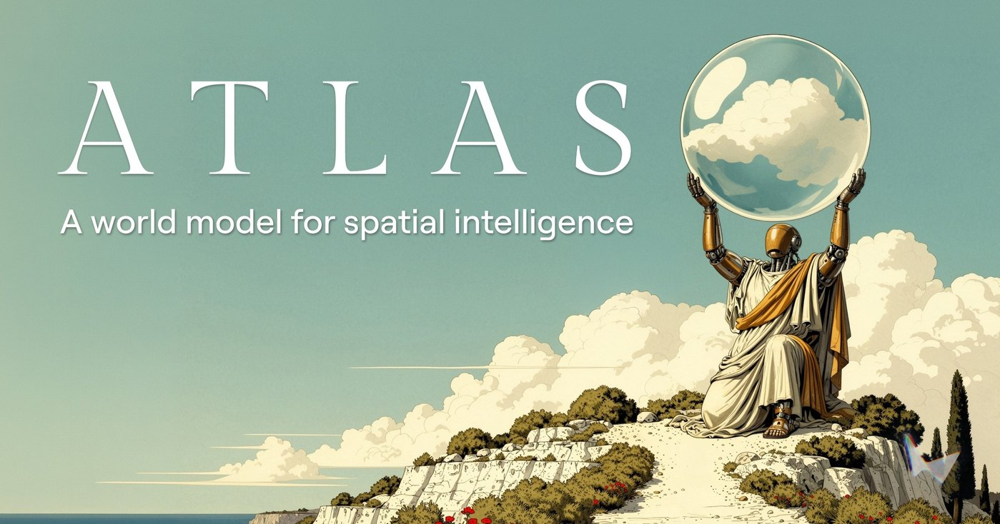
News
Recent updatesWorld Labs released Atlas, a world model for spatial intelligence. I led Atlas 3D.New
World Tracing (first author) is out — paper, project page, code, and live demo are available.
RigMo (first author) accepted by CVPR 2026; code and data will be released soon.
Joining World Labs in San Francisco as a Research Scientist Intern from January 2026.
SP4D (first author) accepted by NeurIPS 2025 as a Spotlight.
PhysRig (first author) accepted by ICCV 2025.
Joined Snap Research (New York) as a Research Scientist Intern.
One paper (first author) accepted by TMLR 2025.
Selected as a Meshy Fellowship 2025 Finalist.
Joined Stability AI.
Joined Pixocial AI Lab in Seattle.
One paper (first author) accepted by ICML 2024.
One paper (first author) accepted by ICLR 2024.
One paper (first author) accepted by AAAI 2024.
One paper (first author) accepted by WACV 2024.
Publications
Selected · * equal contribution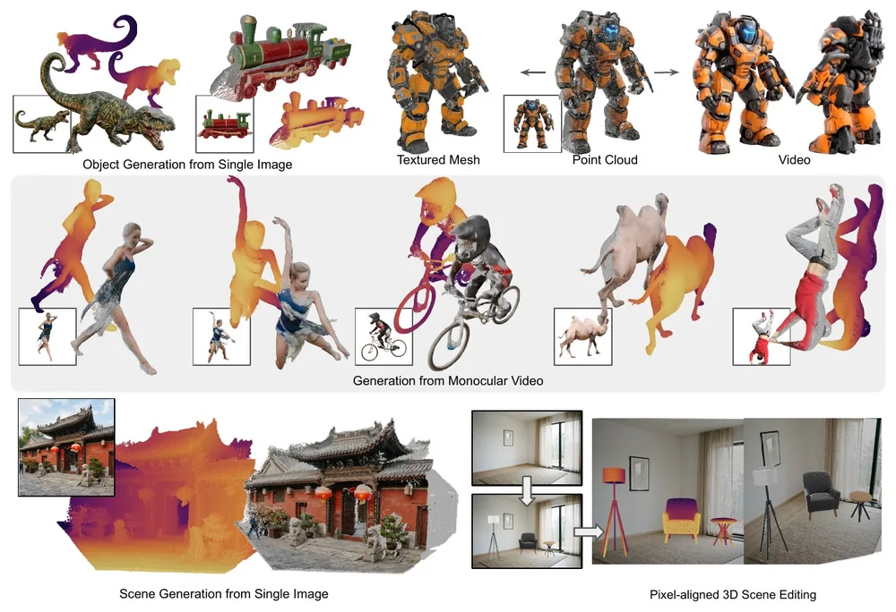
World Tracing: Generative Pixel-Aligned Geometry Beyond the Visible
Hao Zhang1,2, Mohamed El Banani1, Jen-Hao Cheng1, Paul Zhang1, Yi Hua1, Ben Mildenhall1, Christoph Lassner1, Narendra Ahuja2, Gengshan Yang1
1World Labs · 2University of Illinois Urbana-Champaign
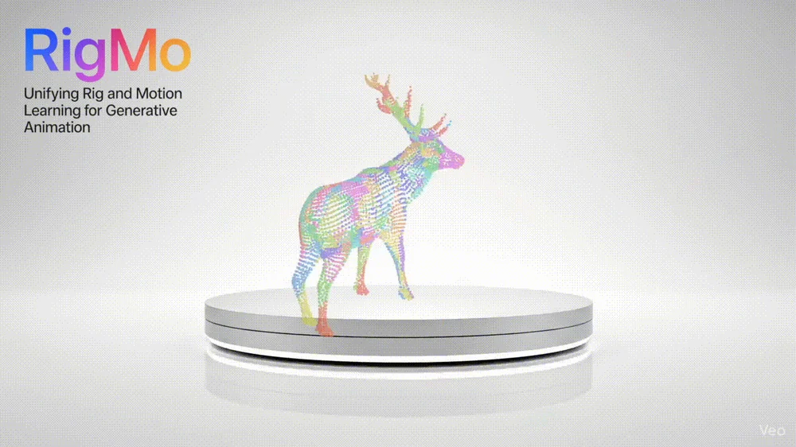
RigMo: Unifying Rig and Motion Learning for Generative Animation
Hao Zhang, Jiahao Luo, Bohui Wan, Yizhou Zhao, Zongrui Li, Michael Vasilkovsky, Chaoyang Wang, Jian Wang, Narendra Ahuja, Bing Zhou
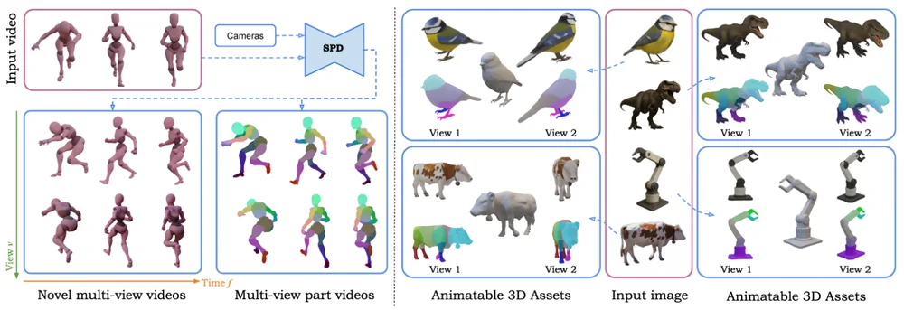
Stable Part Diffusion 4D: Multi-View RGB and Kinematic Parts Video Generation
Hao Zhang, Chun-Han Yao, Simon Donné, Narendra Ahuja, Varun Jampani
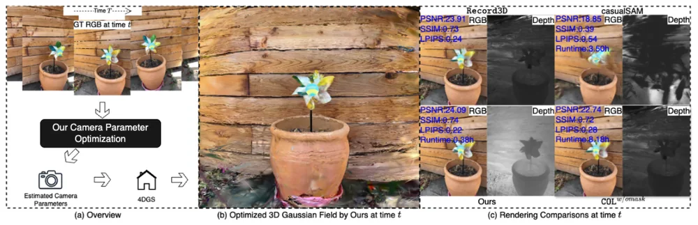
RGB-Only Supervised Camera Parameter Optimization in Dynamic Scenes
Fang Li, Hao Zhang, Narendra Ahuja
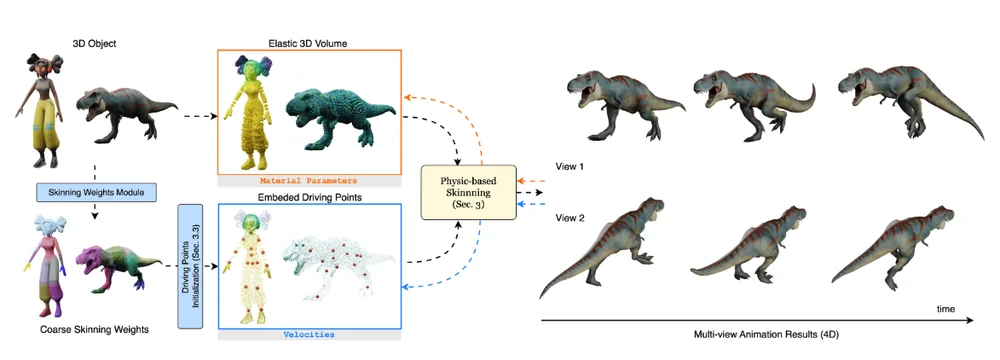
PhysRig: Differentiable Physics-Based Skinning and Rigging Framework
Hao Zhang*, Haolan Xu*, Chun Feng, Varun Jampani, Narendra Ahuja
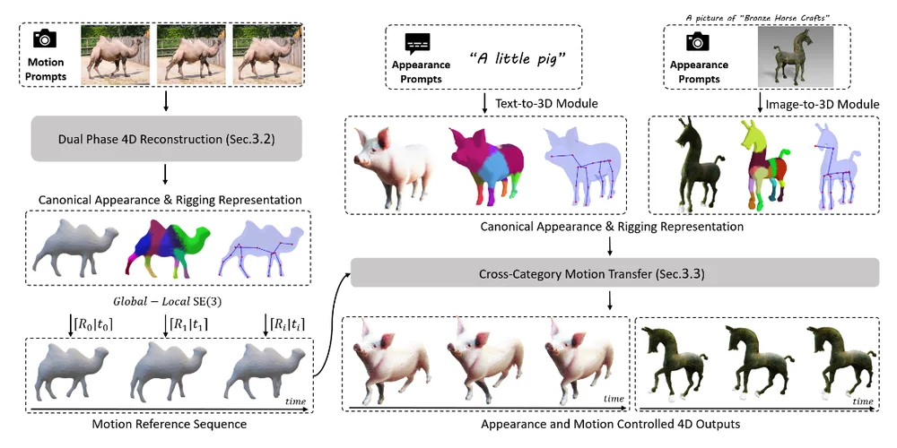
MagicPose4D: Crafting Articulated Models with Appearance and Motion Control
Hao Zhang*, Di Chang*, Fang Li, Mohammad Soleymani, Narendra Ahuja
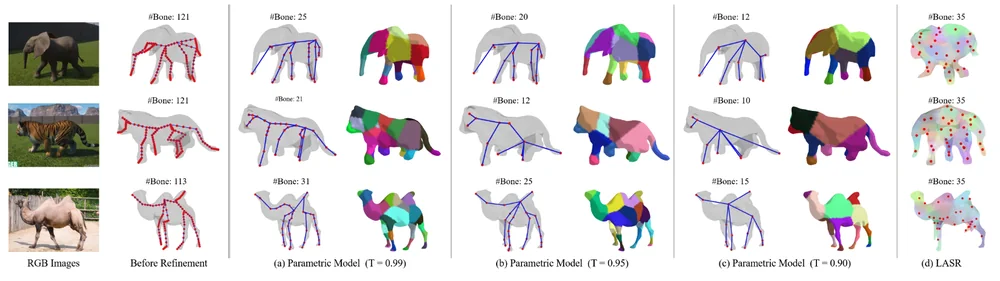
S3O: A Dual-Phase Approach for Reconstructing Dynamic Shape and Skeleton
Hao Zhang, Fang Li, Samyak Rawlekar, Narendra Ahuja
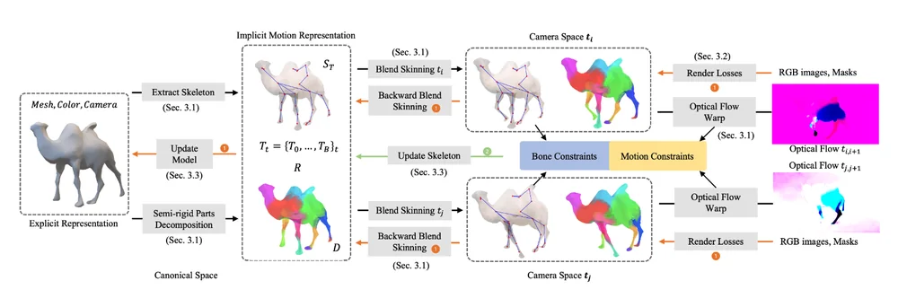
LIMR: Learning Implicit Representation for Reconstructing Articulated Objects
Hao Zhang, Fang Li, Samyak Rawlekar, Narendra Ahuja
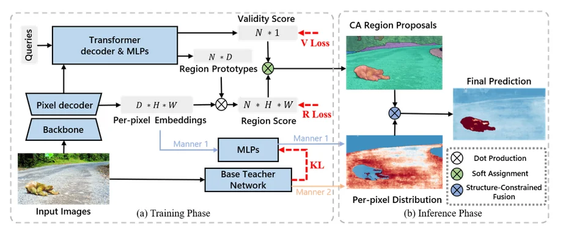
CSL: Class-Agnostic Structure-Constrained Learning for Segmentation
Hao Zhang, Fang Li, Lu Qi, Ming-Hsuan Yang, Narendra Ahuja
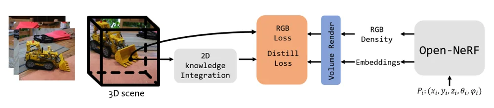
Experience & Education
AI
AI LAB
Academic Service
ReviewingICLR · NeurIPS · ICML · CVPR · ICCV · ECCV · AAAI
IEEE TPAMI · IEEE TIP
Beloved Companions
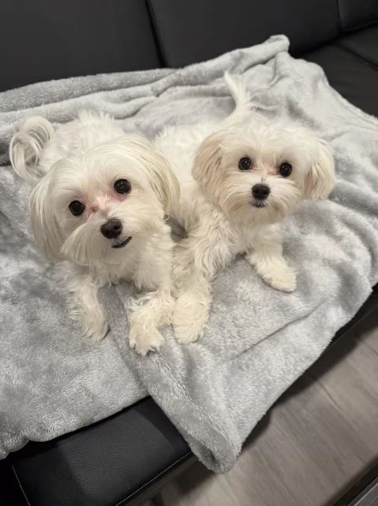
Fifi
Born 2022-08-14 · 6 lbs · —
Taotao
Born 2025-02-14 · 4 lbs · —